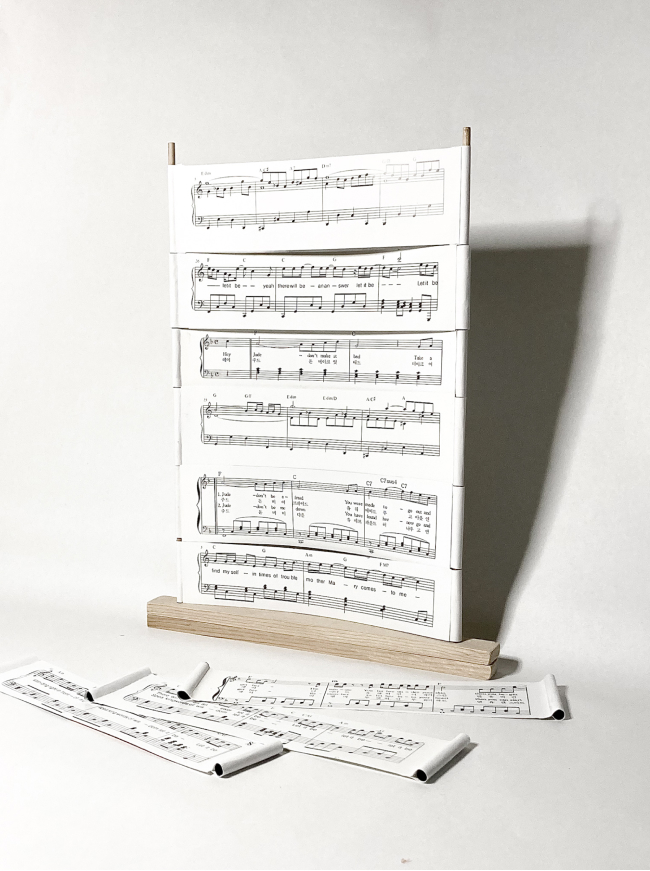
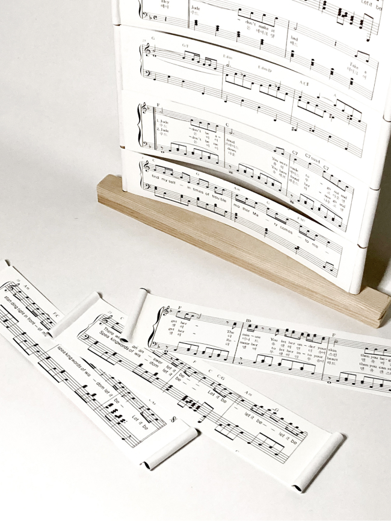
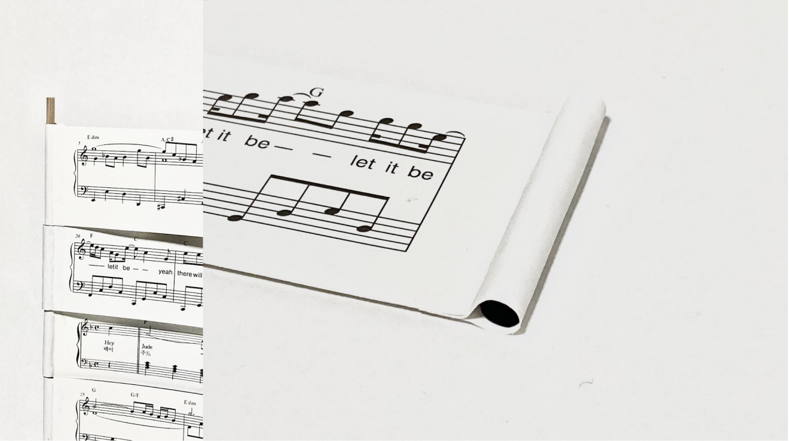
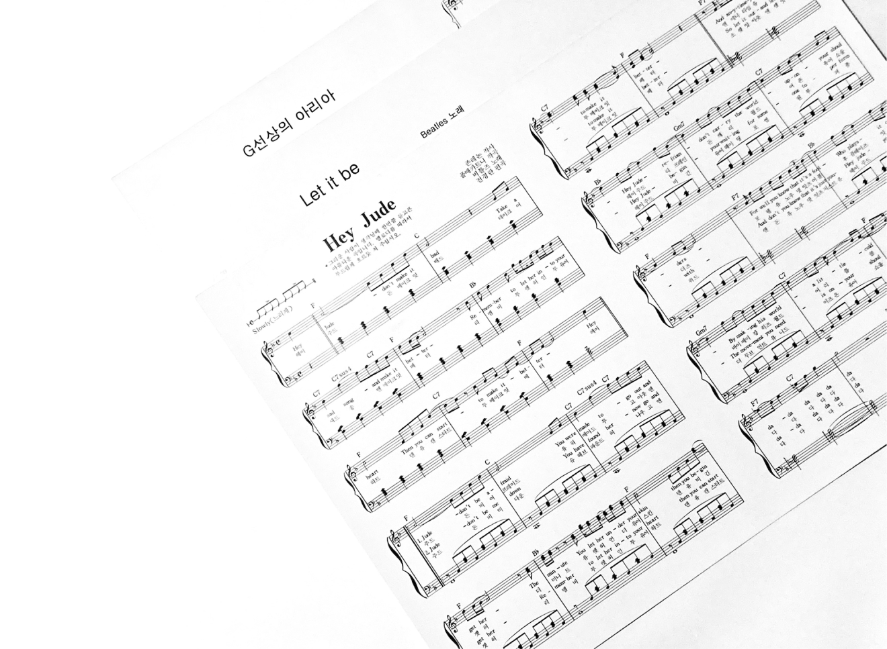
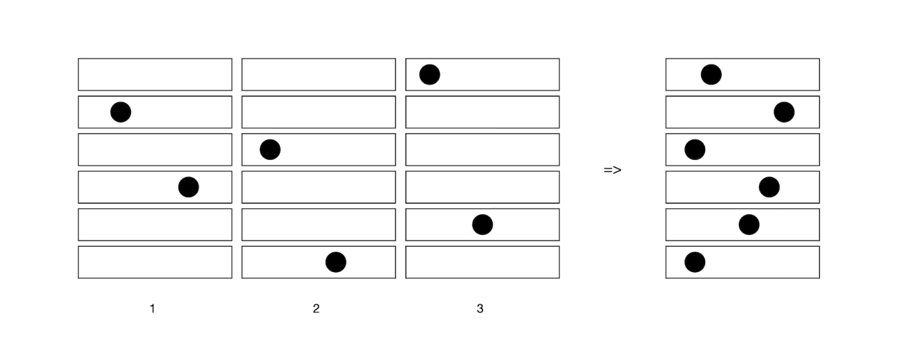

Project
Contact
@hiikariihii
Designer
Collected Book
강지은
MELODY PUZZLE
Category
길고 긴 음악 속 내가 원하는 부분만 퍼즐처럼
조각내어 새로운 음악을 만들 수 있다면? 악보를 가로로 잘라내어한 단락을 만들고 양옆에 고리를 만들어 모듈을 만들었다. 사용자는 퍼즐처럼 원하는 모듈을 자유자재로 끼고 빼며 재미있는 음악을
만들어 낼 수 있다.
-
    